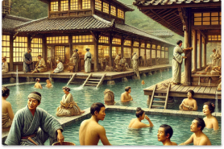

古時的溫泉開發
新北投的溫泉在清朝時期便被當地居民發現，當時人們發現這片土地不僅擁有豐富的自然資源，還擁有天然的溫泉，成為當地居民生活的一部分。溫泉的治療效果也吸引了不少遠來的商旅。
閱讀更多
日治時期，新北投的溫泉資源進一步開發，當時的日本人引進了更多現代化的設施，並將其打造為具有國際水準的度假勝地。這一時期，溫泉成為了觀光與療癒的象徵，吸引了大量的遊客和治療需要者。
現代
隨著現代化的發展，新北投的溫泉不僅保留了傳統的療癒效果，也融入了現代的設施與文化，成為一個休閒度假、享受自然與現代舒適的場所。如今，新北投溫泉區成為台灣最受歡迎的旅遊景點之一。
閱讀更多